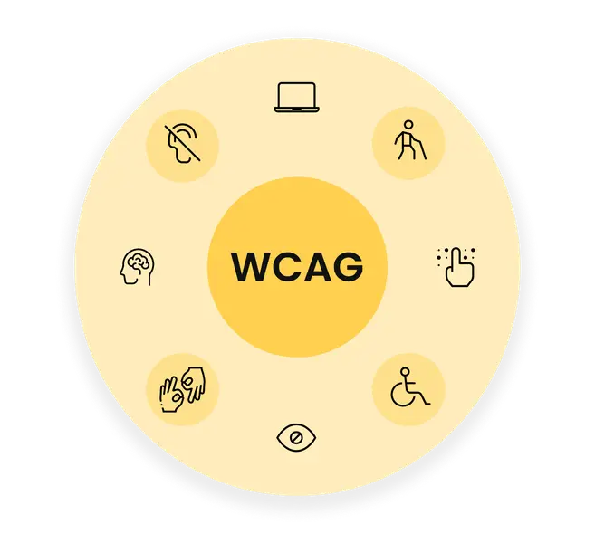

Universell utforming betyr at løsninger skal være laget slik at flest mulig kan bruke dem, også personer med funksjonsnedsettelser.
WCAG står for Web Content Accessibility Guidelines og er regler og retningslinjer for hvordan nettsider og digitalt innhold skal være tilgjengelig for alle.

En konsekvens kan være at noen mennesker ikke får brukt nettsider, bygninger eller andre tjenester på samme måte som andre.
For eksempel kan personer med funksjonsnedsettelser få problemer med å lese, forstå eller bruke noe.

Uutilsynet jobber for at digitale løsninger skal være tilgjengelige for alle. De kontrollerer nettsider og apper, og gir veiledning om universell utforming.